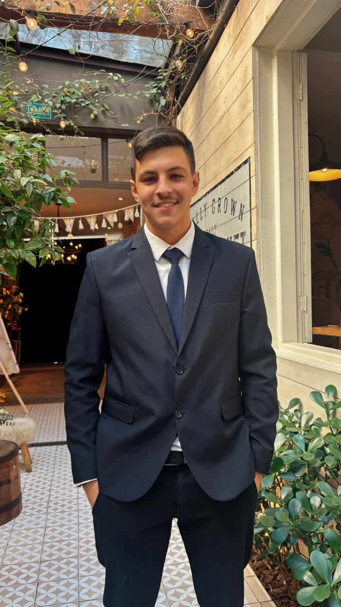

Idade
21 anos
Desenvolvedor Full Stack

Conheça um pouco da minha trajetória e objetivos na área de desenvolvimento.
Meu nome é Iago Boracini Moreira, tenho 21 anos, sou formado em Mecatrônica e atualmente curso Análise e Desenvolvimento de Sistemas.
Trabalho como técnico de manutenção externa em máquinas de lavar louça industriais da marca Winterhalter e já tive experiência anterior com equipamentos oftalmológicos, o que me trouxe vivência prática com sistemas técnicos e resolução de problemas em campo.
Estou em transição para a área de Tecnologia da Informação, com foco em desenvolvimento Full Stack. Tenho direcionado meus estudos para tecnologias como HTML, CSS e JavaScript, além de práticas de estruturação de código, lógica de programação e desenvolvimento web.
Paralelamente, venho desenvolvendo projetos pessoais e estudos práticos voltados à criação de sites e aplicações, com o objetivo de consolidar meu aprendizado e construir um portfólio consistente.
Busco minha evolução constante na área de desenvolvimento, com objetivo de me tornar um desenvolvedor e atuar profissionalmente na área de tecnologia.
21 anos
Análise e Desenvolvimento de Sistemas
São Paulo - SP
Alguns projetos que desenvolvi durante meus estudos.
Lista de tarefas desenvolvida utilizando HTML, CSS e JavaScript, capaz de adicionar, concluir, filtrar e remover tarefas de forma simples e intuitiva, com persistência de dados utilizando LocalStorage.
Sistema desenvolvido para facilitar o gerenciamento de manutenções preventivas, permitindo acompanhar equipamentos de forma organizada.
Calculadora desenvolvida utilizando HTML, CSS e JavaScript, capaz de realizar operações matemáticas básicas de forma rápida e intuitiva.